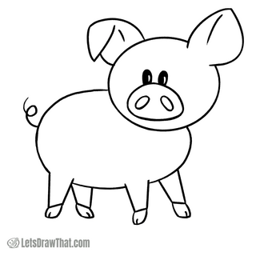
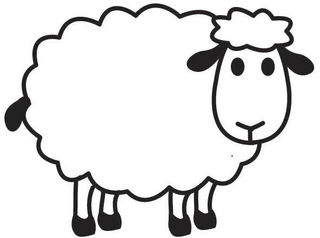
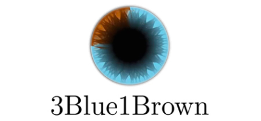

Pattern Recognition and Machine Learning, Lab 1
neoramic@fel.cvut.cz
25 September 2026
Part 1
Decision making
Probabilities are given
Part 2
Parameter estimation
Probabilities are estimated
Part 3
Classifiers and learning
Many different principles
There is a lot. Do not memorize it, understand how the methods compare and relate.
| 25.9. | Introduction, Python, NumPy | |
| 2.10. | Bayesian decision task | |
| 9.10. | Non-Bayesian tasks: minimax | |
| 16.10. | Parzen windows | test |
| 23.10. | MLE, MAP, Bayesian estimation | |
| 30.10. | Logistic regression | |
| 6.11. | Problem solving | |
| 13.11. | Linear classifier: perceptron | test |
| 20.11. | Dean's day, no lab | |
| 27.11. | Support Vector Machine | |
| 4.12. | AdaBoost | |
| 11.12. | K-means clustering | test |
| 18.12. | Convolutional neural networks | |
| 8.1. | Credits, revision, problem solving |
Time
Plan enough time for the assignments!
Skills
All 11 assignments
Each one must pass the BRUTE evaluation
Final deadline: 10 January 2027
All 3 tests
Attend the short written tests at the beginning of the labs on
16 October, 13 November and 11 December
Missing a test for a serious reason? Contact your TA to arrange a make-up test.
1.3 pts within 2 weeks
1 pt after 2 weeks, until the final deadline
no credit after 10 January
The introductory assignment (this week) is worth 1 point, so 1 + 10 × 1.3 = 14 points in total.
Bonus tasks: up to +0.8 pts each. Show them at the lab, no deadline (until the day before the exam).
Labs 50 pts
Written exam 40 pts
Oral 10
+ bonus
Bonus points can push the lab score above 50 or compensate for points lost in the tests
76 % of the grade comes from written work: tests + written exam, i.e. "math" and "problem solving"
F < 50
E 50-59
D 60-69
C 70-79
B 80-89
A 90+
CourseWare
Forum
The preferred channel, all TAs answer there.
E-mail your TA
Only personal matters:
neoramic@fel.cvut.cz
Never e-mail your code asking "what is wrong?". Ask at the forum, TAs see your code.
OK
Not OK
Plagiarism = no zápočet
Best practice
Use AI to learn the syntax or an idea, then implement the solution again from your head (e.g. after 24 hours).
Our goal
We want you to learn, not to paste the assignment into a chat.
Avoid vibe-coding.
Do NOT forget: there is homework already from this first lab!
A1: Non-negativity \(P(A) \ge 0\)
A2: Normalization \(P(\Omega) = 1\)
A3: Additivity \(P(A \cup B) = P(A) + P(B) \;\text{ if }\; A \cap B = \emptyset\)
In general: \(P(A \cup B) = P(A) + P(B) - P(A \cap B)\)
\(P(A \cap B) = \; ?\)
P(

) = ?5/10 = ½P(

) = ?5/10 = ½P([ ]) = ?4/10 = ⅖
P([ ]) = ?6/10 = ⅗
P( | [ ]) = ?3/4
P( | [ ]) = ?4/6 = ⅔
P([ ] | ) = ?3/5
P([ ] | ) = ?4/5
The wolf is hungry. He picks a random animal for lunch.
Product rule \[P(A \cap B) = P(A, B) = P(A \mid B)\,P(B) = P(B \mid A)\,P(A)\]
Sum rule, also called marginalization \[P(A) = P(A, B) + P(A, B^c)\] \(B^c\) is the complement of \(B\): all outcomes in which \(B\) does not occur, \(P(B^c) = 1 - P(B)\)
Total probability \[P(A) = \sum_i P(A, B_i) = \sum_i P(A \mid B_i)\,P(B_i)\] \(B_i\) are mutually exclusive and jointly exhaustive (exactly one of them occurs)
P(, [ ]) = ?P( | [ ]) P([ ]) = ¾ · ⅖ = 0.3
P([ ] | ) P() = ?⅗ · ½ = 0.3
P(, [ ]) = ?P( | [ ]) P([ ]) = 2/6 · ⅗ = 0.2
P() = ?P(, [ ]) + P(, [ ]) = 0.3 + 0.2 = 0.5
\[ \color{#3C7DD9}{P(H \mid E)} = \frac{\color{#E0A800}{P(E \mid H)}\;\color{#9B3C8C}{P(H)}}{\color{#4E8F3A}{P(E)}} \]
\(H\): hypothesis, e.g. it will rain today
\(E\): evidence, e.g. the morning is cloudy
posterior \(P(H \mid E)\) belief in \(H\) after seeing the evidence rain, given a cloudy morning
prior \(P(H)\) belief in \(H\) before any evidence how often it rains
likelihood \(P(E \mid H)\) how well \(H\) explains the evidence, not a probability of \(H\)! cloudy morning, given rain
marginal \(P(E)\) total probability of the evidence, often hard to compute how often it is cloudy
Later in RPZ: \(\theta\) = model parameters, \(D\) = data: \(\quad P(\theta \mid D) = P(D \mid \theta)\,P(\theta) \,/\, P(D) \;\propto\; P(D \mid \theta)\,P(\theta)\)
In words: the posterior of the parameters given the data is proportional to the likelihood of the data times the prior of the parameters. \(P(D)\) does not depend on \(\theta\), so we can drop it when comparing parameters.
In a study, physicians were asked about a woman with an initial 1 % risk of cancer (a malignant tumor) whose mammogram came back positive.
A mammogram correctly classifies about 80 % of malignant tumors (positive result) and 90 % of benign tumors (negative result).
95 of 100 physicians estimated the probability of cancer at about 75 %.
Do you agree?
Source: M. Merling, Practice questions on Bayes's formula, UPenn Math 107
\(M\): malignant, \(B = M^c\): benign
\(+\): positive result
Known: \(P(M) = 0.01\), \(P(+ \mid M) = 0.8\), \(P(- \mid B) = 0.9\)
\(\Rightarrow P(+ \mid B) = 0.1\)
counts = {
const sick = Math.round(1000 * prior);
const tp = Math.round(sick * sens);
const fp = Math.round((1000 - sick) * (1 - spec));
return {tp, fn: sick - tp, fp, tn: 1000 - sick - fp};
}
cells = [
...Array(counts.tp).fill("malignant, +"),
...Array(counts.fn).fill("malignant, −"),
...Array(counts.fp).fill("benign, +"),
...Array(counts.tn).fill("benign, −")
].map((cat, i) => ({cat, x: i % 40, y: Math.floor(i / 40)}))
Plot.plot({
width: 1100, height: 600,
x: {axis: null}, y: {axis: null},
color: {
domain: ["malignant, +", "malignant, −", "benign, +", "benign, −"],
range: ["#E8322C", "#F4A9A5", "#353744", "#E3E8E5"]
},
marks: [Plot.cell(cells, {x: "x", y: "y", fill: "cat", inset: 2, rx: 4})]
})\(P(M \mid +) = \dfrac{P(+ \mid M)\,P(M)}{P(+ \mid M)\,P(M) + P(+ \mid B)\,P(B)} = \dfrac{0.8 \cdot 0.01}{0.8 \cdot 0.01 + 0.1 \cdot 0.99} \approx 0.075\), the prior matters!
We have 3 cards that are identical in form, except for their colors:
The cards are mixed in a hat, one is drawn at random and put on the ground.
If the upper side of the chosen card is red, what is the probability that the other side is black?
Source: M. Merling, Practice questions on Bayes's formula, UPenn Math 107
All 6 sides are equally likely to be on top.
We see red, so only the 3 red sides remain possible.
Only one of them has black on the other side: \(P = \frac{1}{3}\), not \(\frac{1}{2}\)!
Formally, with \(R\) = "the upper side is red": \[ P(RB \mid R) = \frac{P(R \mid RB)\,P(RB)}{P(R \mid RR)\,P(RR) + P(R \mid RB)\,P(RB) + P(R \mid BB)\,P(BB)} = \frac{\frac12 \cdot \frac13}{1 \cdot \frac13 + \frac12 \cdot \frac13 + 0 \cdot \frac13} = \frac13 \]
More from 3Blue1Brown: 3blue1brown.com/topics/probability
